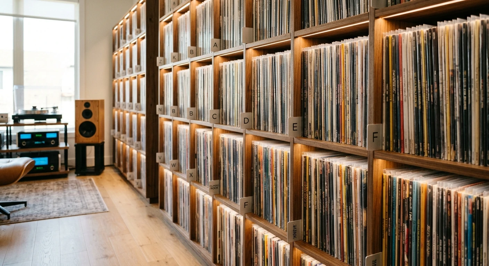

À propos
Plus de 30 ans à collectionner la musique.
Pour moi, la musique dépasse le son : elle vit dans les pochettes, les découvertes et les souvenirs de chaque disque.
Ce site est né de mon attachement à la musique sur support physique. J’achète exclusivement pour ma collection personnelle, en échangeant directement avec les personnes souhaitant vendre leurs vinyles et CD.
Paulo Morais
Les formats changent. La passion reste.
Avec la popularité du CD dans les années 1990, le vinyle a perdu de sa visibilité et de nombreuses collections ont été rangées. L’intérêt s’est ensuite renouvelé. Albums familiers, découvertes inattendues et éditions moins courantes se côtoient aujourd’hui. Tous les disques ne sont pas rares, mais chacun peut être précieux pour celui qui le recherche.
Commencer une collection de vinyles.
Commencez par les albums que vous souhaitez écouter. Explorez disquaires, boutiques d’occasion, foires et plateformes en ligne. Échangez avec des collectionneurs, comparez les exemplaires et vérifiez leur état et les conditions avant un achat ou un échange. Une collection reflète vos choix, pas seulement le prix ou la rareté.

Ranger et organiser ses disques.
Choisissez une étagère stable, adaptée au poids et au format de votre collection. Rangez les disques verticalement, bien soutenus et sans pression excessive. Évitez les piles horizontales. Regroupez les formats similaires et utilisez des séparateurs pour faciliter la recherche et le rangement.
Demander une estimation ↗